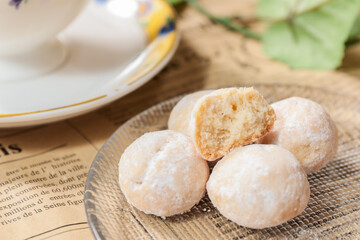

材料４つ！サクほろスノーボールクッキー

材料 (約15個分)
- 薄力粉： 60g
- アーモンドプードル： 20g
- バター： 40g
- 粉砂糖： 20g
- 仕上げの粉砂糖： 適量
作り方
- 【!】薄力粉とアーモンドプードルは合わせてふるっておく
【!】バターは室温に戻しておく - バターをマヨネーズ状になるまで混ぜ、粉砂糖を入れて更に混ぜる。
- ふるっておいた薄力粉とアーモンドプードルを加え、ゴムベラなどで切り混ぜる。
- 生地がまとまってきたらラップで包み、お皿やバットに入れて30分程冷蔵庫で休ませる。
- 【!】タイミングをみてオーブンを180°に予熱させておく
生地を15等分位に切り分けて丸める。 - クッキングシートを敷いた天板に間隔を少し空けてクッキーを並べ、180°で10～12分程焼く。
- 焼けたら網の上で冷まし、完全に冷える前に分量外の粉砂糖をまぶして完成！